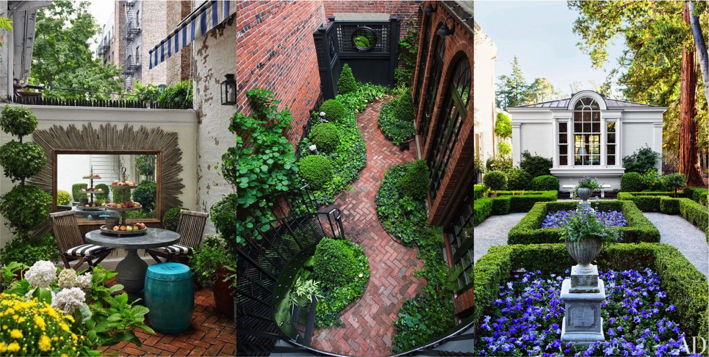

Great Sights in a Chaotic Big World!
Look on the Bright Side
Neons, pastels and everything bright in every angle of your dream scenery. Nature's colorful visuals are a reminder of illuminating hope even under the darkness of harsh realities around.
The desires of a vbrant terrain exists only if you allow it— Just ask your local landscape designer! Take advantage of the season's blooming hightlights.
Fall/Spring/Summer bestows the beauties of Orange Tulips, Primerose, Seafoam daisies, Japanese anemones, Iris Germanicas, Corlarette Dhalias. Reflect your vivid palettes and show your true colors. The options are limitless; Your vision is quite brilliant!
High Court
Don't feel guilty for feeling the luxury of ample space and indulgence. Reflect your edge for rich traditionalism with long tiled redstone brick. The elegance is in your court.
Create the grandeur of your relaxation with the view into the enclave of white tulips arranged around the water fountain— as if the circle of rounded hedges and stone pebbled boundary wasn't an eyeful from the well lit open concept dining space.
Formality in it's rare form and here lies a plot full of intricate green lush. The Architectural Digest has enough features to tempt the stylish needs with the high order. Let's look past the monotony and the uninspired standards of outdoor living. It's a supreme charm of things!
Hedge-Fun
The whimsical display of yeilding shrubbery is the ultimate expression of great rewards. Take a risk for the sake of art and wonder and be the standout visonary in your neighborhood.
Give yourself a high gratifying return for investing in your surrealist ambitions. The maze of discovery exists not only in your landscape but in plain sight for all wandering eyes.
Take the average hedge grooming to new heights. The ordinary is so dull these days. Spiral into the world of green bush arches. Shape up the old perception—Put an abstract spin on a typical linear view. There's a lot of fun to be had in your greenspace. Being bold has a thrilling edge.